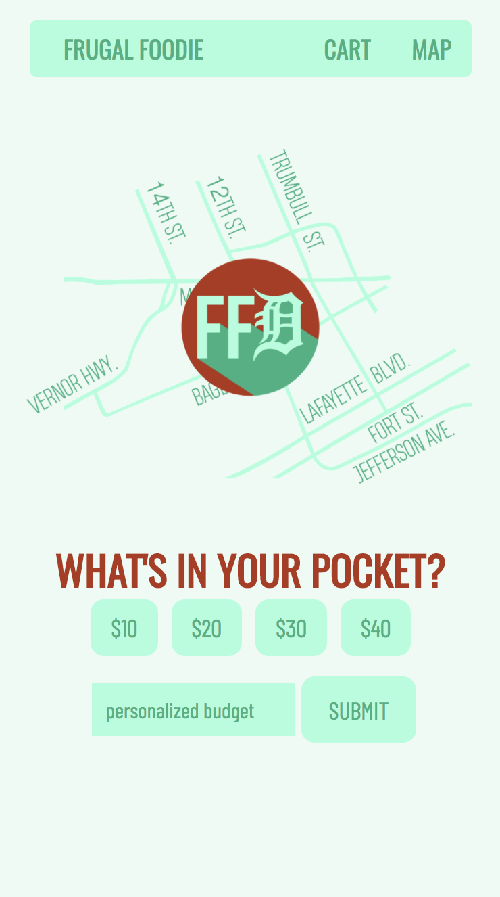
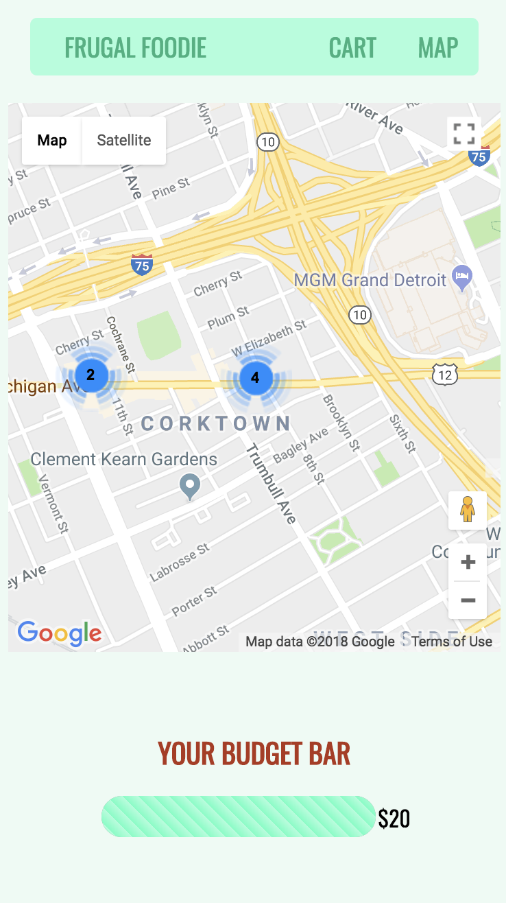
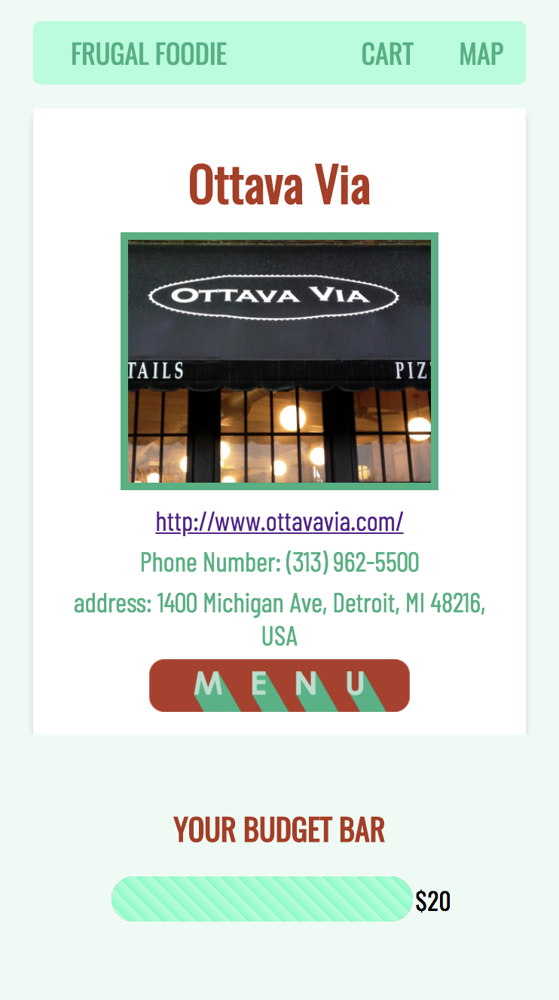
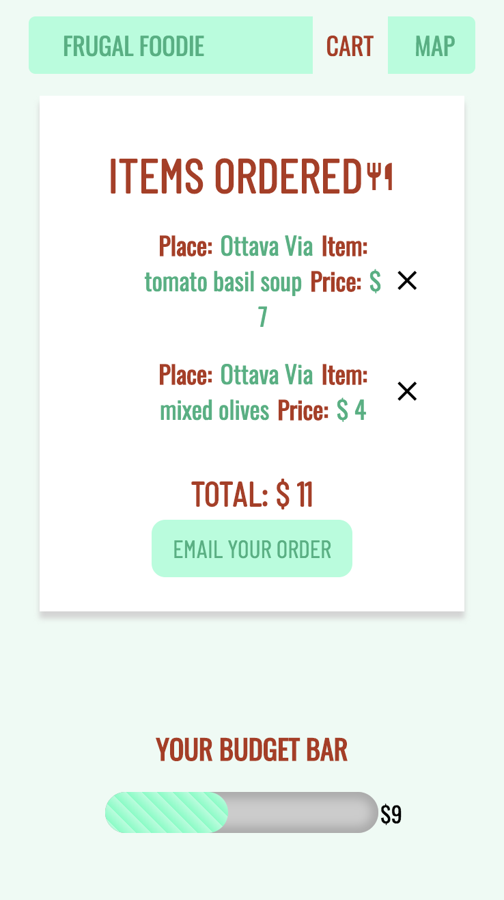

MISSION PLAN
Whether or not you live in Detroit, dining out in the city (or any city) can be an overwhelming experience.
The culinary industry is growing exponentially and everyone wants to try the newest restaurant.
It can be difficult to maintain your budget, while still experiencing the vast culinary community.
If you can relate to this sentiment, the frugal foodie might just be for you. We have developed an application to help
maintain your budget and explore new restaurants before you even leave your house. We’ve selected Corktown
for our preliminary area, due to it’s wide variety of restaurants.

FUNCTIONALITY
We used the google maps API to find the location of each restaurant, as well and built our own database to provide the entire menu to you,
along with the prices. Before you explore corktown restaurants, frugal foodie will keep track of your personal budget, along with a tip.
As you select items, the app will disable the items that are no longer in your price range, and when your budget is maxed out, you will
be notified and have the option to either change your budget or to continue to view your cart. You can then email your selections to yourself,
along with any notes you’d like to add about your experience, which we’ve done using the email API. We think you’ll find that the frugal foodie
is not only helpful, but will be effective to keep both your stomach and wallet full.
TRY THE FRUGAL FOODIE FOR YOURSELF.